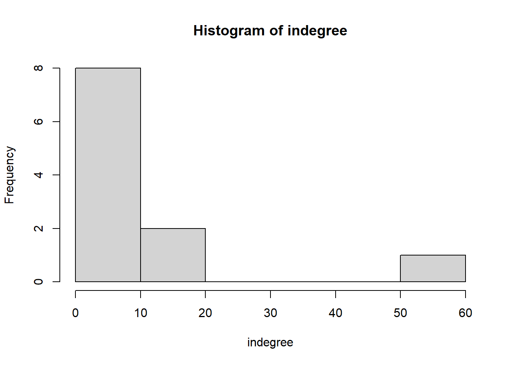
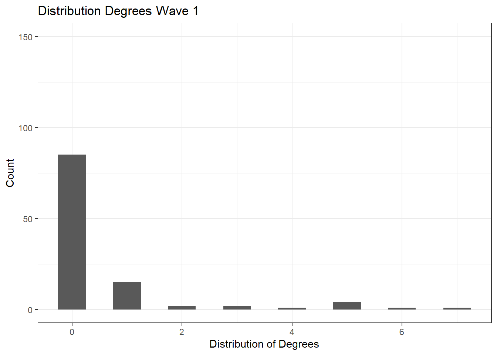

Descriptive
Statistics
Next, it is important to look at measures of centrality. The number
of degrees of connections is the simplest term for centrality. If there
are differences in degree centrality, then we can illustrate nodes by
differing size (for example) to accommodate for this. This is
demonstrated in the wave 1 and wave 2 network visualizations of radboud
political science and sociology professors collaboration networks, as
the professors that participate in more collaborations (shared
publications) have a larger node size.
With the descriptive statistics, we want to describe if this network
is complete, the size of this network, what kind of relationships there
are (whether or not it is directed), and the node type (as well as if
the tie is weighted). We will also briefly look at local and global
transitivity, looking at both the dyads and triads that form in this
collaboration network for reference. Considering this is not a big part
of the research questions though, we will not focus on this in the
analysis.
Looking at the size of the network, we can see that there are 111
professors (n=111) across wave 1 and wave 2. We see that there are 31
collaborations that took place in wave 1, and 85 collaborations in wave
2. Additionally, we can look at the in-degree clustering that arose in
order to better see the distribution of collaborations. Visualized in
histograms below, we see in wave 1 that most professors have 0 degrees,
several having 1 degree, and then only a few professors having 2 or more
degrees, with the maximum number of degrees at 7 in wave 1 for Radboud
University. Looking at summary statistics of degree distribution for
wave 1, the mean degrees is 0.5586.
We can then see in the second histogram, representing wave 2, that
the distribution of collaborations shifted; while still the majority,
fewer professors have 0 degrees compared to wave 1, which makes sense
considering the professors have had more time to publish. Similarly, we
can also see relatively more professors having between 1-4 degrees. From
there, only a few professors have 5 or more degrees, with the maximum
number of degrees at 15. Looking at summary statistics of the degree
distribution, the average degrees of wave 2 is 1.532, nearly 1 entire
degree higher than in wave 1.
Load Packages
library(igraph)
require(igraph)
packages <- c("tidyverse", "scholar", "openalexR", "rvest", "jsonlite")
packages <- c("devtools", "igraph")
Size
#SIZE
# number of nodes for RU professors - both sociology and political science
vcount(test_wave1ru) #returns 111
#> [1] 111
vcount(test_wave2ru) #returns 111
#> [1] 111
There are 111 nodes in both wave 1 and wave 2 of this network,
representing 111 professors in the Radboud University social network
data.
Edges
#EDGES
# number of edges for RU professors
ecount(test_wave1ru) #returns 31
#> [1] 31
ecount(test_wave2ru) #returns 85
#> [1] 85
There are 31 edges in wave 1, and 85 edges in wave 2, representing
collaborations/shared publications in the Radboud University social
network data.
In-Degree
Clustering and Spread
#DEGREE
# looking at clustering and spread
igraph::degree(test_wave1ru)
#> https://openalex.org/A5066180740 https://openalex.org/A5011326378 https://openalex.org/A5024053147
#> 0 0 5
#> https://openalex.org/A5015717800 https://openalex.org/A5030606755 https://openalex.org/A5093927073
#> 0 0 0
#> https://openalex.org/A5047911137 https://openalex.org/A5116748350 https://openalex.org/A5103578414
#> 0 0 0
#> https://openalex.org/A5046746723 https://openalex.org/A5032988766 https://openalex.org/A5098335659
#> 0 2 0
#> https://openalex.org/A5093234318 https://openalex.org/A5063338887 https://openalex.org/A5107698575
#> 0 0 0
#> https://openalex.org/A5071959536 https://openalex.org/A5040273574 https://openalex.org/A5094354264
#> 0 0 0
#> https://openalex.org/A5002117058 https://openalex.org/A5059896113 https://openalex.org/A5059113934
#> 0 0 1
#> https://openalex.org/A5047687982 https://openalex.org/A5066699568 https://openalex.org/A5093934510
#> 0 1 0
#> https://openalex.org/A5030570203 https://openalex.org/A5024195666 https://openalex.org/A5009494890
#> 0 0 0
#> https://openalex.org/A5035350135 https://openalex.org/A5071625615 https://openalex.org/A5071355463
#> 7 0 0
#> https://openalex.org/A5021060071 https://openalex.org/A5027839165 https://openalex.org/A5090100669
#> 0 0 0
#> https://openalex.org/A5068642001 https://openalex.org/A5002931512 https://openalex.org/A5064646891
#> 1 0 0
#> https://openalex.org/A5080235042 https://openalex.org/A5038009917 https://openalex.org/A5087380803
#> 0 1 1
#> https://openalex.org/A5093259650 https://openalex.org/A5041095675 https://openalex.org/A5017382943
#> 0 0 0
#> https://openalex.org/A5108721962 https://openalex.org/A5107295433 https://openalex.org/A5009683458
#> 0 0 0
#> https://openalex.org/A5023395007 https://openalex.org/A5055096981 https://openalex.org/A5031002485
#> 0 0 0
#> https://openalex.org/A5029073868 https://openalex.org/A5031128137 https://openalex.org/A5017637321
#> 0 5 0
#> https://openalex.org/A5018242597 https://openalex.org/A5074062335 https://openalex.org/A5019799886
#> 0 0 0
#> https://openalex.org/A5023362052 https://openalex.org/A5085493990 https://openalex.org/A5003892082
#> 0 0 5
#> https://openalex.org/A5069836300 https://openalex.org/A5002388922 https://openalex.org/A5066542953
#> 0 1 0
#> https://openalex.org/A5068588707 https://openalex.org/A5019957971 https://openalex.org/A5060015711
#> 0 3 2
#> https://openalex.org/A5020765315 https://openalex.org/A5069636960 https://openalex.org/A5007673492
#> 1 1 3
#> https://openalex.org/A5072177695 https://openalex.org/A5013043102 https://openalex.org/A5049078170
#> 0 0 0
#> https://openalex.org/A5048988743 https://openalex.org/A5010364555 https://openalex.org/A5006555859
#> 4 0 0
#> https://openalex.org/A5009655338 https://openalex.org/A5040048804 https://openalex.org/A5016107698
#> 0 0 1
#> https://openalex.org/A5035502020 https://openalex.org/A5027800349 https://openalex.org/A5050683616
#> 6 0 1
#> https://openalex.org/A5003168251 https://openalex.org/A5112742337 https://openalex.org/A5012137641
#> 0 0 0
#> https://openalex.org/A5083920028 https://openalex.org/A5030092568 https://openalex.org/A5016505779
#> 0 0 0
#> https://openalex.org/A5023494442 https://openalex.org/A5031371982 https://openalex.org/A5068000059
#> 1 0 0
#> https://openalex.org/A5030977100 https://openalex.org/A5063497971 https://openalex.org/A5032861550
#> 1 0 0
#> https://openalex.org/A5023979520 https://openalex.org/A5102793963 https://openalex.org/A5054557953
#> 0 0 0
#> https://openalex.org/A5079372810 https://openalex.org/A5013258554 https://openalex.org/A5044669679
#> 5 0 0
#> https://openalex.org/A5065130106 https://openalex.org/A5062608377 https://openalex.org/A5012711147
#> 0 1 0
#> https://openalex.org/A5066857494 https://openalex.org/A5093339339 https://openalex.org/A5005730087
#> 0 0 0
#> https://openalex.org/A5001803910 https://openalex.org/A5057934803 https://openalex.org/A5092244311
#> 0 0 0
#> https://openalex.org/A5087731727 https://openalex.org/A5039152196 https://openalex.org/A5065278343
#> 1 0 0
#> https://openalex.org/A5012806378 https://openalex.org/A5113457866 https://openalex.org/A5040189434
#> 1 0 0
igraph::degree(test_wave2ru)
#> https://openalex.org/A5066180740 https://openalex.org/A5011326378 https://openalex.org/A5024053147
#> 0 0 6
#> https://openalex.org/A5015717800 https://openalex.org/A5030606755 https://openalex.org/A5093927073
#> 0 1 0
#> https://openalex.org/A5047911137 https://openalex.org/A5116748350 https://openalex.org/A5103578414
#> 0 0 0
#> https://openalex.org/A5046746723 https://openalex.org/A5032988766 https://openalex.org/A5098335659
#> 1 2 0
#> https://openalex.org/A5093234318 https://openalex.org/A5063338887 https://openalex.org/A5107698575
#> 1 0 0
#> https://openalex.org/A5071959536 https://openalex.org/A5040273574 https://openalex.org/A5094354264
#> 2 1 0
#> https://openalex.org/A5002117058 https://openalex.org/A5059896113 https://openalex.org/A5059113934
#> 2 0 2
#> https://openalex.org/A5047687982 https://openalex.org/A5066699568 https://openalex.org/A5093934510
#> 0 6 0
#> https://openalex.org/A5030570203 https://openalex.org/A5024195666 https://openalex.org/A5009494890
#> 0 0 0
#> https://openalex.org/A5035350135 https://openalex.org/A5071625615 https://openalex.org/A5071355463
#> 10 0 0
#> https://openalex.org/A5021060071 https://openalex.org/A5027839165 https://openalex.org/A5090100669
#> 0 0 0
#> https://openalex.org/A5068642001 https://openalex.org/A5002931512 https://openalex.org/A5064646891
#> 1 0 0
#> https://openalex.org/A5080235042 https://openalex.org/A5038009917 https://openalex.org/A5087380803
#> 2 1 3
#> https://openalex.org/A5093259650 https://openalex.org/A5041095675 https://openalex.org/A5017382943
#> 2 0 0
#> https://openalex.org/A5108721962 https://openalex.org/A5107295433 https://openalex.org/A5009683458
#> 0 0 0
#> https://openalex.org/A5023395007 https://openalex.org/A5055096981 https://openalex.org/A5031002485
#> 1 3 4
#> https://openalex.org/A5029073868 https://openalex.org/A5031128137 https://openalex.org/A5017637321
#> 0 5 0
#> https://openalex.org/A5018242597 https://openalex.org/A5074062335 https://openalex.org/A5019799886
#> 4 1 0
#> https://openalex.org/A5023362052 https://openalex.org/A5085493990 https://openalex.org/A5003892082
#> 1 4 8
#> https://openalex.org/A5069836300 https://openalex.org/A5002388922 https://openalex.org/A5066542953
#> 0 2 1
#> https://openalex.org/A5068588707 https://openalex.org/A5019957971 https://openalex.org/A5060015711
#> 0 2 6
#> https://openalex.org/A5020765315 https://openalex.org/A5069636960 https://openalex.org/A5007673492
#> 4 1 5
#> https://openalex.org/A5072177695 https://openalex.org/A5013043102 https://openalex.org/A5049078170
#> 5 0 0
#> https://openalex.org/A5048988743 https://openalex.org/A5010364555 https://openalex.org/A5006555859
#> 4 0 1
#> https://openalex.org/A5009655338 https://openalex.org/A5040048804 https://openalex.org/A5016107698
#> 2 1 7
#> https://openalex.org/A5035502020 https://openalex.org/A5027800349 https://openalex.org/A5050683616
#> 15 0 1
#> https://openalex.org/A5003168251 https://openalex.org/A5112742337 https://openalex.org/A5012137641
#> 0 0 0
#> https://openalex.org/A5083920028 https://openalex.org/A5030092568 https://openalex.org/A5016505779
#> 0 2 0
#> https://openalex.org/A5023494442 https://openalex.org/A5031371982 https://openalex.org/A5068000059
#> 4 2 0
#> https://openalex.org/A5030977100 https://openalex.org/A5063497971 https://openalex.org/A5032861550
#> 1 2 0
#> https://openalex.org/A5023979520 https://openalex.org/A5102793963 https://openalex.org/A5054557953
#> 0 0 2
#> https://openalex.org/A5079372810 https://openalex.org/A5013258554 https://openalex.org/A5044669679
#> 4 0 0
#> https://openalex.org/A5065130106 https://openalex.org/A5062608377 https://openalex.org/A5012711147
#> 3 5 0
#> https://openalex.org/A5066857494 https://openalex.org/A5093339339 https://openalex.org/A5005730087
#> 0 2 1
#> https://openalex.org/A5001803910 https://openalex.org/A5057934803 https://openalex.org/A5092244311
#> 4 0 0
#> https://openalex.org/A5087731727 https://openalex.org/A5039152196 https://openalex.org/A5065278343
#> 4 0 0
#> https://openalex.org/A5012806378 https://openalex.org/A5113457866 https://openalex.org/A5040189434
#> 2 0 1
hist(table(degree(test_wave1ru)), xlab='indegree', main= 'Histogram of indegree')

# every number is the degree level of each actor. We can see it is heavily skewed to the left.
# Wave 1: see frequency of 7 for indegree 0:20, frequency of 0 for indegree 20:80, frequency 1 for indegree 100:150
hist(table(degree(test_wave2ru)), xlab='indegree', main= 'Histogram of indegree')

# Similarly, we can see that wave 2 is also heavily left skewed.
# Wave 2: see frequency of 8 for indegree 0:10, frequency of 2 for indegree 10:20, 0 for 20:50, 1 for 50:60.
While we can see with the above histograms that there is left-skewed
indegree distributions, indicating that the vast majority of egos
collaborate between 0-1 times, the nuance of the distribution is
unclear. We therefore will further inspect degree centrality for each
wave.
Degree Centrality
Wave 1
#degree centrality w1
degree_w1 <- degree(test_wave1ru)
degree_w1 <- as.data.frame(degree_w1)
# view(degree_w1)
ggplot(degree_w1, aes(as.numeric(degree_w1), colour = as.numeric(degree_w1) )) +
geom_histogram(binwidth = .5) +
labs(
title = "Distribution Degrees Wave 1",
x = "Distribution of Degrees",
y = "Count"
) +
ylim(0, 150) +
theme_bw()

With this histogram, we can better see the distribution of
collaborations, with most professors having 0 degrees, several having 1
degree, and then only a few professors having 2 or more degrees, with
the maximum number of degrees at 7 in wave 1 for Radboud University.
Looking at summary statistics of degree distribution for wave 1, the
mean degrees is 0.5586.
summary(degree_w1)
#> degree_w1
#> Min. :0.0000
#> 1st Qu.:0.0000
#> Median :0.0000
#> Mean :0.5586
#> 3rd Qu.:0.0000
#> Max. :7.0000
Degree Centrality
Wave 2
#degree centrality w2
degree_w2 <- degree(test_wave2ru)
degree_w2 <- as.data.frame(degree_w2)
ggplot(degree_w2, aes(as.numeric(degree_w2), colour = as.numeric(degree_w2))) +
geom_histogram(binwidth = .5) +
labs(
title = "Distribution Degrees Wave 2",
x = "Distribution of Degrees",
y = "Count"
) +
ylim(0, 150) +
theme_bw()
 With this second histogram, we can also see the distribution of
collaborations and how it shifted since wave 1. Most professors still
have 0 degrees, though notably less professors have 0 degrees than in
wave 1, which makes sense considering the professors have had more time
to publish. Similarly, we can also see relatively more professors having
between 1-4 degrees. From there, only a few professors have 5 or more
degrees, with the maximum number of degrees at 15. Looking at summary
statistics of the degree distribution, the average degrees of wave 2 is
1.532, nearly 1 entire degree higher than in wave 1.
With this second histogram, we can also see the distribution of
collaborations and how it shifted since wave 1. Most professors still
have 0 degrees, though notably less professors have 0 degrees than in
wave 1, which makes sense considering the professors have had more time
to publish. Similarly, we can also see relatively more professors having
between 1-4 degrees. From there, only a few professors have 5 or more
degrees, with the maximum number of degrees at 15. Looking at summary
statistics of the degree distribution, the average degrees of wave 2 is
1.532, nearly 1 entire degree higher than in wave 1.
summary(degree_w2)
#> degree_w2
#> Min. : 0.000
#> 1st Qu.: 0.000
#> Median : 0.000
#> Mean : 1.532
#> 3rd Qu.: 2.000
#> Max. :15.000
Transitivity
Additionally, while transitivity is not a main focus for this
research since we focus on the effect of gender in collaborations, it
still is a meaningful descriptive statistic for describing the network.
With this, we assume it is undirected (even though the network is
directed), because the presence of transitivity is more of interest than
the direction of it.
Dyad and Triad
Census (for ref.)
Moving from local to global transitivity, we next look at triads for
global transitivity. Global transitivity refers to the number of
observed over the possible transitive triads. We can identify all
transitive triads that have taken place, and then all possible triads.
For this, we will first review dyads, still looking at dyads as directed
considering that the network is assumed to be directed as initiated by
the first author.
igraph::dyad_census(test_wave1ru) #with plot -- works
#> $mut
#> [1] 4
#>
#> $asym
#> [1] 23
#>
#> $null
#> [1] 6078
# Returns: 4 mut, 23 asym, 6078 null
igraph::dyad_census(test_wave2ru) #with plot -- works
#> $mut
#> [1] 7
#>
#> $asym
#> [1] 71
#>
#> $null
#> [1] 6027
# Returns: 7 mut, 71 asym, 6027 null
The dyad census for wave 1 returns 4 mutual, 23 asymmetrical, and
6078 null collaborations. The dyad census for wave 2 returns 7 mutual,
71 asymmetrical, 6027 null collaborations. This is intuitive, as it is
reasonable that the total number of collaborations would increase from
wave 1 to wave 2, and that the total mutual collaborations in particular
would increase, as authors who have collaborated before may be more
comfortable with future partnerships (in reference to theoretical
foundations/literature. COME BACK TO THIS.)
Triad census,
transitivity and triad allegation (for ref.)
We next review triads, assuming that they are undirected for
simplicity, as this is for reference, in order to contextualize
findings. We will briefly look at triad census, transitivity, and triad
allegation for reference. While this is not essential to research, it is
interesting to consider in the context of collaboration networks, and
understanding the collaboration patterns at work.
Triad Census
igraph::triad_census(test_wave1ru) #with plot -- works
#> [1] 218926 2422 416 10 14 8 9 6 1 0 1 0 0
#> [14] 1 1 0
# Returns: [1] 218926 2422 416 10 14 8 9 6 1 0 1 0 0 1 1 0
igraph::triad_census(test_wave2ru) #with plot -- works
#> [1] 213567 7306 709 25 106 41 34 6 10 1 0 1 4
#> [14] 2 2 1
# Returns: [1] 213567 7306 709 25 106 41 34 6 10 1 0 1 4 2 2 1
The triad census generally demonstrates that from wave 1 to wave to,
the proportion of collaborations generally increase across the board.
This supports the theoretical assumptions that people who have
collaborated before are likely to collaborate again, and are likely to
collaborate with other egos that they are familiar with (or that their
previous collaborators have collaborated with).
Transitivity and Triad Allegation
library(sna)
# Wave 1
sna::triad.census(test$nets[1,,]) #with adj matrix of test_wave1ru -- triad.census of (test_w1) doesn't work.
#> 003 012 102 021D 021U 021C 111D 111U 030T 030C 201 120D 120U 120C 210 300
#> [1,] 218926 2422 416 10 14 8 9 6 1 0 1 0 0 1 1 0
unloadNamespace("sna") #detach this package again to avoid interference with other igraph functions
# Returns: 003 012 102 021D 021U 021C 111D 111U 030T 030C 201 120D 120U 120C 210 300
# [1,] 218926 2422 416 10 14 8 9 6 1 0 1 0 0 1 1 0
# Same as igraph triad census!
igraph::transitivity(test_wave1ru, type = "global") #with plot
#> [1] 0.1578947
# Returns: [1] 0.1578947
sna::gtrans(test$nets[1,,]) #triad census a different way, but this is with plot - need with adj mat:
#> [1] 0.1515152
# Returns: [1] 0.1515152
triad_w1ru <- data.frame(sna::triad.census(test$nets[1,,])) #save as df, #with adj matrix
transitivity_w1 <- (3 * triad_w1ru$X300)/(triad_w1ru$X201 + 3 * triad_w1ru$X300) #X300 is variable for transitive triad (the fully closed triad) - we multiply by 3 because there are 3 possible transitive triads
transitivity_w1
#> [1] 0
# Returns 0 (?)
# Wave 2
sna::triad.census(test$nets[2,,])
#> 003 012 102 021D 021U 021C 111D 111U 030T 030C 201 120D 120U 120C 210 300
#> [1,] 213567 7306 709 25 106 41 34 6 10 1 0 1 4 2 2 1
unloadNamespace("sna") #I will detach this package again
# Returns: 003 012 102 021D 021U 021C 111D 111U 030T 030C 201 120D 120U 120C 210 300
# [1,] 213567 7306 709 25 106 41 34 6 10 1 0 1 4 2 2 1
triad_w2ru <- data.frame(sna::triad.census(test$nets[2,,])) #save as df
igraph::transitivity(test_wave2ru, type = "global")
#> [1] 0.2290909
# Returns: [1] 0.2290909
sna::gtrans(test$nets[2,,]) #triad census a different way
#> [1] 0.2741935
# Returns: [1] 0.2741935
transitivity_w2 <- (3 * triad_w2ru$X300)/(triad_w2ru$X201 + 3 * triad_w2ru$X300) #X300 is variable for transitive triad (the fully closed triad)
# we multiply by 3 because there are 3 possible transitive triads
transitivity_w2
#> [1] 1
# Returns: [1] 1
We find that transitivity of wave 1 is 0.1578947 (from igraph. From
the SNA package, gtrans is similar, at 0.1515152). We find that the
transitivity of wave 2 is 0.2290909 (from igraph. From the SNA package,
gtrans is slightly larger, at 0.2741935). Additionally, when looking at
transitive triads, we find transitivity to be 0 in wave 1 and 1 in wave
2.
To answer my first research question, I will develop several tables
summarizing the data analysis of cross-gender collaborations by gender,
discipline, and wave. I will look at the total number of collaborations
across both waves, and the proportion of cross-gender and same-gender
collaborations out of these. I will also look at the total amount of
male and female professors participating in the cross-gender
collaborations, and the amount of male and female professors by
discipline, to better understand and control for differences in
departments. In comparing all of these, we will be able to see the
proportions of cross-gender collaborations out of total collaborations
over time, the proportion of male and female participation, and the
variation in proportion of male and female participation by department,
providing us a comprehensive understanding of gender and cross-gender
collaboration effects.
I hypothesize that furthermore, ‘female’ as an ego-level
characteristic increases the potential for cross-gender
collaborations.
 Additionally, as this analysis will control for discipline, the bar
chart above visually demonstrated the distribution of men and woman
across the different departments at Radboud university.
Additionally, as this analysis will control for discipline, the bar
chart above visually demonstrated the distribution of men and woman
across the different departments at Radboud university.